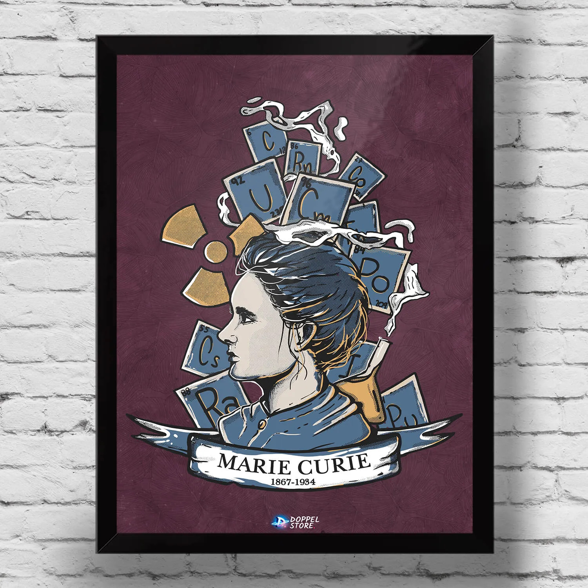

Vocês devem escolher uma mulher que teve contribuições importantes para a área da computação e fazer um pôster virtual sobre essa pessoa. Segue uma lista de alguns exemplos de mulheres importantes para a computação, mas vocês estão livres para encontrar outras mulheres que vocês acham interessantes e fazer sobre elas (mas por favor mostre para seu professor a mulher escolhida antes de começar a fazer o pôster).
1. Ada Lovelace
2. Carol Shaw
3. Frances Allen
4. Roberta Williams
5. Grace Hopper
6. Hedy Lamarr
7. Katherine Johnson
O objetivo desses pôsteres é atiçar a curiosidade de outras pessoas sobre a história dessas mulheres e incentivá-las a buscar mais informações. Ao contrário do cartaz sobre o Alan Turing, quero que vocês se preocupem em deixar o cartaz visualmente atraente e deixar pistas/ganchos sobre a história ou contribuições dessas mulheres.
Abaixo tem um exemplo de um pôster/estampa feito em homenagem à Marie Curie, uma famosa cientista responsável pela descoberta da radioatividade e de novos elementos químicos. Ambas pesquisas deram a ela dois Prêmios Nobel e tornaram ela a única pessoa até hoje a obter dois Prêmios Nobel em duas áreas de diferentes de pesquisa dentro da ciência. Notem como o pôster ilustra a própria pessoa, o seu nome, as datas de nascimento e de morte, além de vários detalhes ao redor dela que fazem referência às suas contribuições para a ciência.

Enviar o resultado final para meu e-mail: fernando.hattori@veredaeducacao.com
Lembre-se de utilizar o que aprendemos sobre mecanismos de busca na semana passada para refinar esta busca.